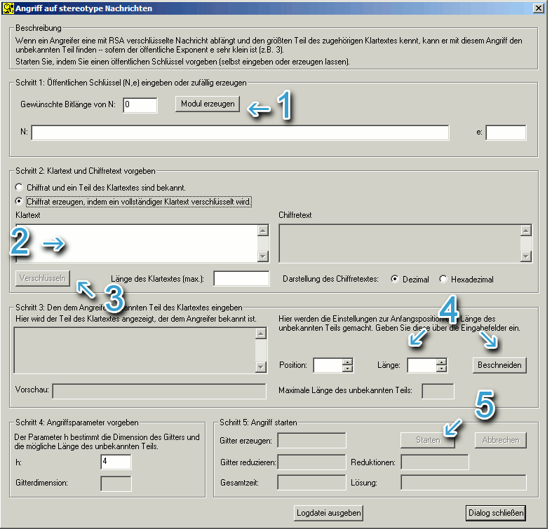

Sie erreichen diesen Dialog über den Menüeintrag Einzelverfahren \ RSA-Kryptosystem \ Gitterbasierte Angriffe auf RSA \ Angriff auf stereotype Nachrichten.
Die Maske zum Angriff auf stereotype Nachrichten
bietet zwei verschiedene Ansätze:
1. Beispieldaten erzeugen lassen, dann Angriff durchführen
Man erzeugt in der Maske selbst ein Beispiel und führt anschließend
den Angriff darauf durch. Zusätzlich muss gekennzeichnet werden, welcher
Teil der Nachricht unbekannt ist.
Dieser Modus gibt unerfahreneren Benutzern die Möglichkeit,
die Grenzen des Verfahrens zu erkunden.
2. Alle Informationen selbst eingeben, dann Angriff durchführen
Man gibt den öffentlichen Schlüssel, den bekannten Teil der
Nachricht und den Geheimtext selbst ein, um einen Angriff durchzuführen.
Zusätzlich müssen noch Angaben zur Länge und Position des unbekannten
Teils der Nachricht gemacht werden. Dieser Modus ist nur für erfahrene
Benutzer zu empfehlen.

Hier ist zuerst der öffentliche Schlüssel
(N,e)
einzugeben (das Feld "gewünschte Bitlänge von
N"
kann man hierbei ignorieren).
Dann ist in "Schritt 2" des Dialogs der erste Radiobutton auszuwählen
und der gesamte Geheimtext einzugeben.
Anschließend muss in "Schritt 3" der bekannte Teil des
Klartextes eingegeben werden. Darüber hinaus müssen die Position und die
Länge des unbekannten Teils der Nachricht eingestellt werden. Dies kann entweder
durch direkte Eingabe in die entsprechenden Felder oder durch Verwendung der Drehfelder
geschehen. Wurde der bekannte Teil des Klartextes bereits eingegeben, können
im "Vorschau"-Feld die Änderungen direkt nachvollzogen
werden: Es werden "Länge" viele Sterne in den bekannten Klartext
eingefügt, angefangen ab dem gegebenen Offset.
In der Gruppierung "Schritt 4" kann der Parameter h dieses Angriffes verändert werden (h>1). Ein größeres h erlaubt zwar einen größeren unbekannten Teil, wirkt sich jedoch ungünstig auf die Gitterdimension und damit die Laufzeit aus.
Zum Starten des Angriffs drücken Sie auf den "Starten"-Button in der Gruppierung "Schritt 5" des Dialogs.
N:
81310067042521973654412416255383522902083490331150101578762604997556337351877500251868504140980638835702886192443448896428977810893957566807779481557371020210138654283590601149334614497294215115728214075082663632500764651168005473090221075184203807588533522903997544767899971452793878122769013464319929212827
e:
3
Geheimtext (dezimal):
6876244464448251820979970022698884385836638083088083419902980411203512466120416238865613640690374802876646562813408073087772632930261205441418948916744828883561053460736104035313942934234432107110875242023732132161152311950942935350416008458837058423162900984604703060723925905499919978226774400829173376590
Bekannter Teil des Klartextes
(ohne Anführungszeichen):
"Hallo Bob!
Dein heutiges Passwort lautet:
MfG, der Chef"
Anfangsposition des unbekannten
Teils:
44
Länge des unbekannten Teils:
10
Dann sollte es als Passwort den folgenden String finden: "Roadrunner".